. Within the diagram shown in next figure, both stereotypes «Requirement» and «Refinement» extend respectively both meta-classes Class and Dependency:
. Within the diagram shown in next figure, both stereotypes «Requirement» and «Refinement» extend respectively both meta-classes Class and Dependency:The purpose of this chapter is to provide the Papyrus users all the documentation needed in order to be able to use UML profiles. It includes the information for modeling and defining a profile using the Papyrus UML profile editor, but also the information for the usage of a profile within a user application model.
The basic premise of profiles is that all domain-specific concepts are derived as extensions or refinements of existing UML concepts, called UML metaclasses. These extensions are called stereotypes. A stereotype definition must be consistent with the abstract syntax2 and semantics of standard UML meta-classes it extends. Consequently, a profile-based model can be created and manipulated by any tool that supports standard UML. Moreover, because the concepts underlying a profile are specializations of existing UML concepts, it is more easily learned by anyone with knowledge of UML.
A stereotype is defined either as an extension of a UML base metaclass or as a specialization of an existing stereotype. The extension relationship of UML is not an association but a kind of association directed from the stereotype to the extended metaclass. Consequently, the metadata conveyed by the associated the attributes of the stereotype are associated to the extended metaclass in a transparent manner for the metaclass itself. This allows profiles owning the stereotypes to be applied and removed dynamically without modifying the underlying models — a fundamental feature of the profile mechanism.
A stereotype may have attributes and may be associated with other stereotypes or existing UML metaclasses.
Constraints, such as OCL constraints (3), can also be defined in a profile. They can apply to stereotypes defined in the profile or those imported by the profile. They can also be used to further constrain elements of the UML metamodel. For instance, one could define an OCL constraint that all instances of Class in a model are active, or that all instances of Class must have at least one Operation (regardless of whether the Class is extended by a stereotype or not). However, not all constraints can be written in OCL. In that case, it is common to denote those latter in natural language. The drawback is that such constraints are no more automatically interpretable and need to be first rewritten in some language the UML tool will understand. In the context of Papyrus, it is then usual to use Java.
To create a new Profile, select File > New > Papyrus Project (Or Papyrus model, if you already have an opened project). When asked for a Diagram Language, Select "Profile":
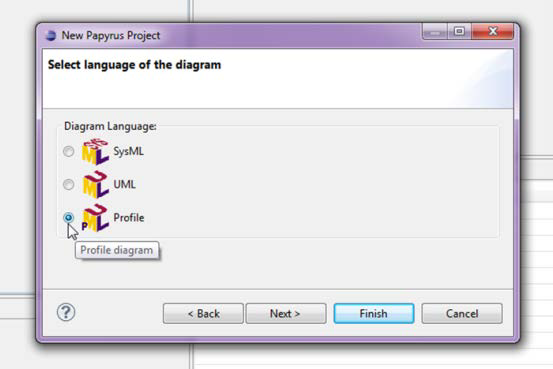
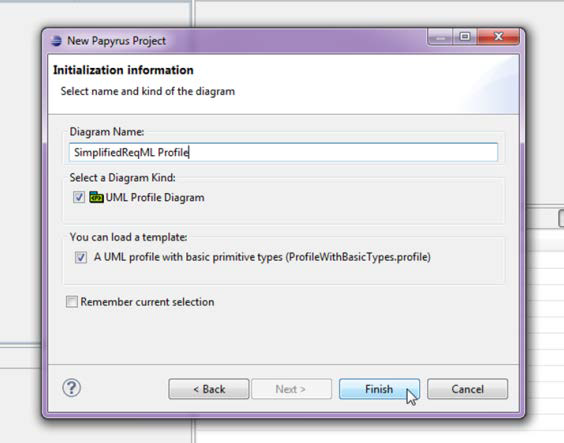
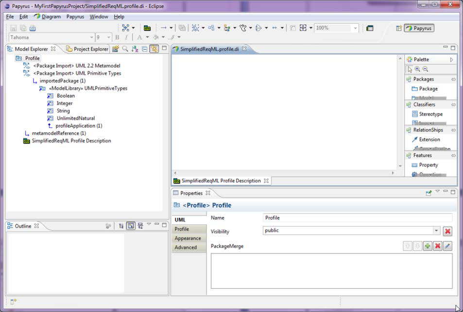
Once a profile has been created, it is now time to populate this latter with UML extensions, i.e. stereotypes, and their related concepts such as properties, extensions, and metaclasses.
A stereotype is created as any other UML model elements in Papyrus: select the related tool in the palette of the profile diagram editor, and then click in the place you want to create this element on the background of the diagram. If the palette is not open, just click on the small arrow on the upper right corner of the diagram editor. Papyrus will then ask you to provide a name. Once done, hit the return key and that all.
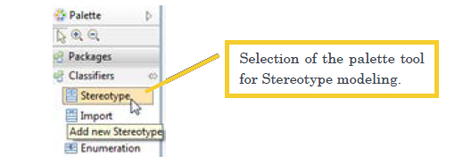
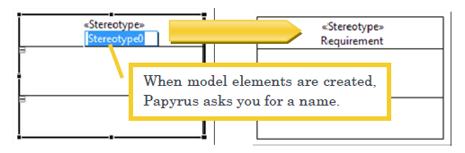
Once you have created a stereotype, you need to import the UML2 metaclasses you want to extend. First, you have to select the tool “Import Metaclass” within the palette of the profile diagram editor. Then, let’s click on the profile diagram where you want to drop the imported metaclass. A Papyrus dialog box is then opened in order to ask you to specify which metaclasses you want to import. Select the metaclasses in the left list and either drag and drop these latter in the right list or press the button with arrow directed from left to right and located between both aforementioned lists. Then, let’s press the button “ok” and it is done. The imported metaclasses are then shown in the diagram as illustrated.
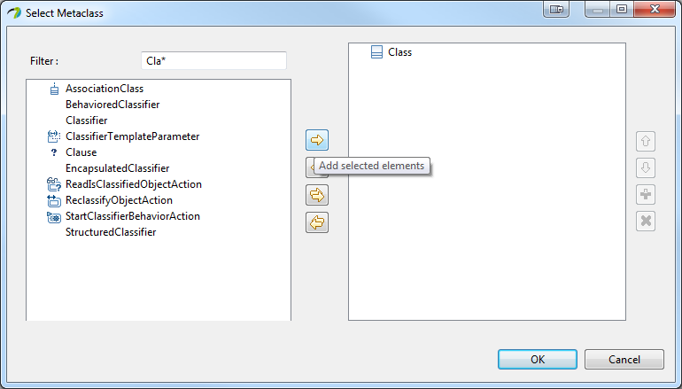
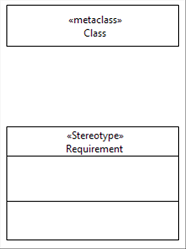
Note: When you import UML2 metaclasses, Papyrus is creating ImportElement model element referent to the metaclasses of the UML2 metamodel itself. Those so-called specific model elements, the ImportElement, are indeed a kind of proxy to the model elements contained in another model, in the UML2 metamodel. If a metaclass has already be imported, you do not need to import it again to use it in another context. You can select the imported meta-class from the model browser and drag and drop this latter on the diagram you want to use it.
Once the stereotype is created and the meta-class is imported, you may then model the extension relation from the stereotype to the meta-class as shown in the following figure. The extension relationship is modeled using the extension tool in the profile diagram palette, . Within the diagram shown in next figure, both stereotypes «Requirement» and «Refinement» extend respectively both meta-classes Class and Dependency:
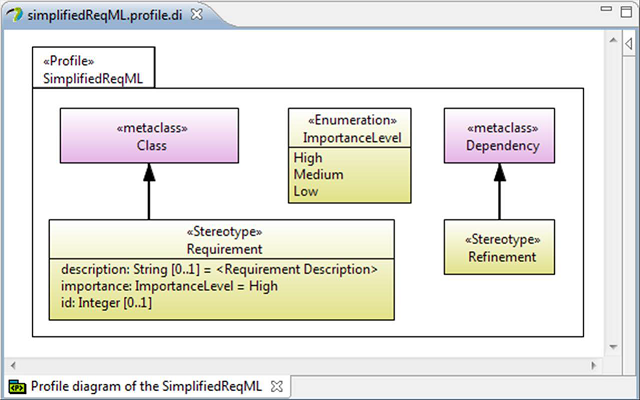
Some profile may be complex due as for example to their scope that may be large. In order to cope with this complexity, it is then possible to decompose a profile into a hierarchy of subprofiles. A subprofile behaves such as a sub-package; it is a container of stereotypes.
To create a sub profile, select the profile tool in the profile diagram palette ( ) and then click on the profile diagram where you want to create your new profile.
) and then click on the profile diagram where you want to create your new profile.
In the example denoted below, we have created two sub-profiles of the SimplifiedReqML profile in order to gather in one hand the extensions that apply to node elements of the models and in the other hand the extension defined in the DSML for modeling relationships between those nodes:
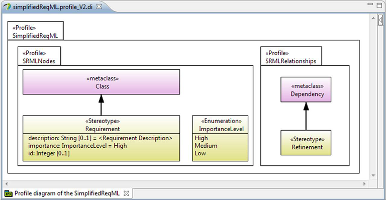
When designing a profile, it is possible to reuse existing stereotypes defined in other existing profiles. Stereotypes can indeed be generalized enabling to create child stereotypes that inherit features of one or more generalized stereotype define either locally in the profile or externally other profiles.
To create a stereotype generalization using the profile diagram editor, let’s draw a generalization relationship using the tool  from the palette. As any relationship within Papyrus, you need to click first on the source and then on the target of the relationship you want to model.
from the palette. As any relationship within Papyrus, you need to click first on the source and then on the target of the relationship you want to model.
In our example, there exists in the UML predefined profile a stereotype extending the dependency relationship in order to introduce the concept of refinement: «Refine». Consequently, we will redesign our sub-profile SRMLRelationship in order our stereotype «Refinement» to be a specialization of this UML stereotype instead of directly extending the UML dependency meta-class.
As previously mentioned, you may extend a stereotype defined in your profile or a stereotype defined in another external profile. In the latter case, the first thing to do is to import the profile where the stereotype has been defined, as denoted in the following example:
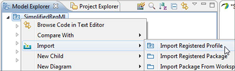
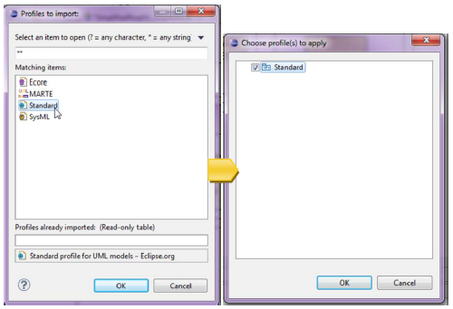
Once the profile has been imported, you can select the stereotype you want to generalize from the imported profile (In the Model Explorer) and drop this latter in the diagram of profile description:
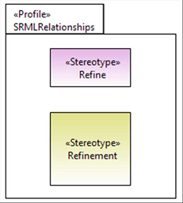
Now, let’s draw the generalization relationship from your stereotype (e.g., «Refinement» in the figure below) to the generalized stereotype (e.g., «Refine» in the figure below).
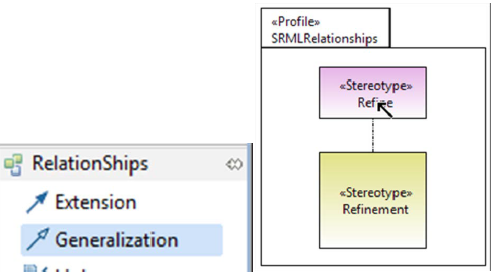
At this point, your diagram should look like something like the one shown here:
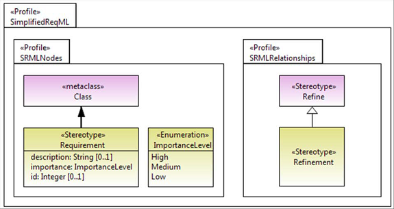
When a stereotype application is shown in a diagram, the by-default way to show it within diagrams is using a string where the name of the stereotype is shown within a pair of French guillemets above or before the name of the model element. However, it is also possible to modify the graphical appearance of the annotated model element using icons. If the graphical representation of the model element is something like a box (including ellipse of the use cases), the icons can be displayed inside and on top of the figures, or it may replace this latter. In that latter case, the property of the element cannot be shown and the name of the model element appears within a label displayed near the icon. If the model element is graphically denoted by a line, the icon is shown in front of the name of the link.
In order to specify the icons you want to attach to a stereotype, select the stereotype and the tab UML of the property view. In the right-upper corner of the widget named “icons”, press the button  to add a new icon as shown in step 1. Once done, the dialog box shown at step 2 is open. Within this latter, let’s fill in a name and select an image file using the button defining the content of the icon. Next, you have to define the kind value: icon or shape. Using this property, you can choose to associate the selected image either as an icon or as a shape.
to add a new icon as shown in step 1. Once done, the dialog box shown at step 2 is open. Within this latter, let’s fill in a name and select an image file using the button defining the content of the icon. Next, you have to define the kind value: icon or shape. Using this property, you can choose to associate the selected image either as an icon or as a shape.
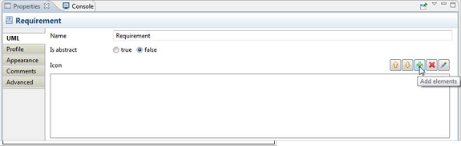
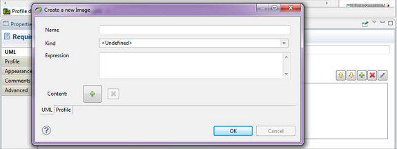
It is possible to associate only one shape to a stereotype, but you can associate different icons to a same stereotype. In that latter case, there is a description property that is used to select which one to display. By default, if no expression is defined, the first one is the list is chosen for displaying. The expression has to be on a property of the stereotype which type is an enumeration type. In our example, we can set different icons to the stereotype «Requirement» depending on the value of its importance property. This latter is indeed typed by the ImportanceLevel enumeration which values may be High, Medium of Low (figure shown below). For this example, we will then associate the three following images , , and , to the stereotype «Requirement» and their related expression will be respectively importance=High (e.g. figure shown below), importance=Medium and importance=Low.
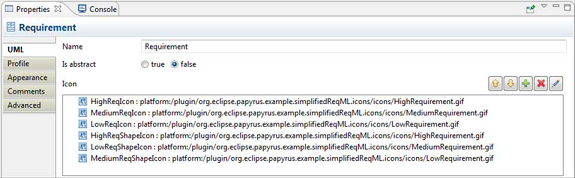
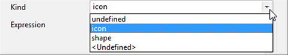
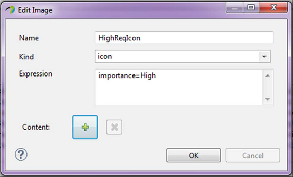
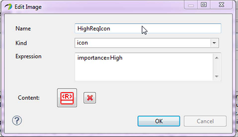
Once a profile has been modeled, we need to define it before being able to apply it on user models. The definition of a profile consists in:
“When defining a dynamic profile representation, the contents of a profile are converted to an equivalent Ecore format that is stored as an annotation on the profile. Then, when a profile and its stereotypes are applied to a model and its elements, dynamic EMF (see the EMF book for details) is used to store property values for the stereotypes. For the most part, you can ignore this complexity, as long as you remember to define your profile before using it.”
(This definition has been extracted from http://wiki.eclipse.org/MDT/UML2/Introduction_to_UML2_Profiles)
PS: The implementation of profile support in the UML2 component of MDT supports defining both dynamic and static profile representations. In this the document, we will focus on dynamic profiles.
To define a profile within Papyrus, you just need to save it doing as for example following actions: either through the menu bar action File > Save or using the key shortcut “CTRL S”. Let’s notice, that it is not mandatory to define a profile each time you save it. If you do not want to define your profile when saving it, just answer no to the related question asked by Papyrus when saving profile modifications. However, if you want to apply the modifications you have done on a given profile, this you have to define it again in order the modifications may be taken into account at the user model level.
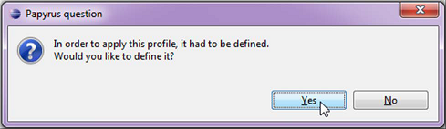
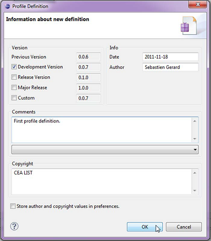
Note: If the profile contains errors (Such as an untyped Property or unnamed Stereotype), you won't be able to define it. However, it can still be saved. In such a case, a Diagnostic dialog displays all the validation errors preventing the profile from being defined.
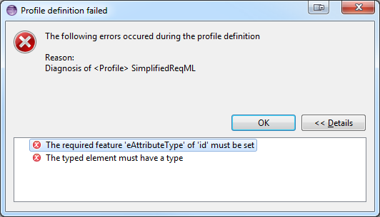